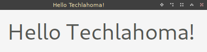

Created: 2019-10-04 Fri 14:35
#! /usr/bin/python3 # <- Remember Python 2.7 retires in a few months
import sys # <- gets all of the system functions
from PySide2.QtWidgets import (QApplication, # <- the basic application
QLabel, # <- your standard labels
QWidget, # <- individual components of your app
QVBoxLayout) # <- container to tie everything together
app = QApplication(sys.argv)# <- Sets up the app and passes all command line arguments to it
window = QWidget()
layout = QVBoxLayout()
label = QLabel("<font size=40> Hello Techlahoma! </font>") # <- Has HTML style tagging
layout.addWidget(label)
window.setLayout(layout)
window.setWindowTitle("Hello Techlahoma!")
window.show()
app.exec_()

python -m pip install PySide2 --user